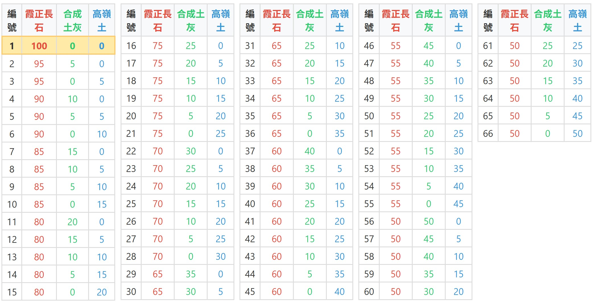

釉藥化學的迷人之處，在於不同原料間的交互作用。本次實驗將核心設定為「霞正長石、合成土灰、高嶺土」的三元系統，採用 1250°C 電窯氧化燒，並於頂溫恆溫 30 分鐘。透過 5% 為級距的 66 個三角座標試片，我們可以具體觀察這三種原料——長石的鹼金屬溫潤感、土灰的強效助熔力，以及高嶺土的高溫耐火骨架——如何在烈火中拉鋸與交融。
一、66個試片的配方設計
本次實驗的三角座標三個頂點設定為：頂部 100% 霞正長石、左下角由 0% 遞增至 50% 的合成土灰、右下角由 0% 遞增至 50% 的高嶺土。配方比例詳見下表：

- 頂部（霞正長石）： 富含鹼金屬（鈉、鉀），自熔性佳，燒成後常呈現帶有細緻開片冰裂紋的溫潤厚釉。
- 左下角（合成土灰）： 富含鈣、鎂等元素，是極強的高溫助熔劑，能大幅降低黏度，產生劇烈流動並賦予釉面深邃的茶褐色玻化光澤。
- 右下角（高嶺土）： 主要提供氧化鋁與二氧化矽，負責拉升釉藥的高溫黏度與耐火度。適量可產生漂亮消光，過量則會引發乾澀生燒。
二、整體佈局與三軸向觀察
試片出窯排列後，三大原料的勢力範圍一目了然：頂部保留了乳白的冰裂質感；左下角被土灰的強大助熔力拉扯出茶褐色的深色玻璃相與流釉；而右下角則因高嶺土比例過高，轉為生澀的白色消光狀態。
.jpg)
三、頂部高長石區（厚實冰裂的溫潤質感）
在頂部的區段（霞正長石占比 90%~100%），高鹼金屬的長石主導了釉面。這裡的配方即使只微調 5% 的變數，也能看出冰裂紋理與清透度的細微差異。
.jpg)
.jpg)
單一霞正長石即有良好熔融度，呈現半透明乳白與細緻冰裂紋。
.jpg)
加入 5% 具有助熔效果的合成土灰，釉面透度增加，底緣開始有微弱反應。
.jpg)
加入 5% 高嶺土提升黏度，釉面變得更加濃稠雪白，依然伴隨冰裂紋理。
四、左翼高土灰區（劇烈流釉與深色玻化）
沿著左翼往下觀察，隨著合成土灰比例的增加，其強大的助熔威力完全釋放。釉面不但徹底玻璃化，更因為黏度極低，在試片凹槽處淤積出厚實的茶褐色、黃綠色透明玻璃相。
.jpg)
.jpg)
.jpg)
高比例土灰帶來極高透明度，底部積釉處呈現明顯厚實的玻璃相與開片。
.jpg)
釉面完全熔融透亮，微帶青褐色底韻，表面佈滿細緻網狀冰裂紋。
.jpg)
土灰 50% 頂點，流動性極端劇烈，於凹槽淤積成清澈的黃綠色厚玻璃。
.jpg)
強烈熔融，呈現茶褐色的玻璃質感與向下流淌的積釉特性。
值得注意的是，在高土灰的強勢助熔下，即便加入了一定比例的高嶺土，也難以完全抑制流動：
.jpg)
即便有 10% 高嶺土提升黏度，40% 的土灰依舊讓釉面高度玻化且向下垂流聚集。
.jpg)
高溫下形成深邃的垂流滴狀痕跡，乳濁與清透的玻璃相交雜流動至底緣。
五、中央過渡區（由亮轉暗的流動軌跡）
在三角座標的中央區域，我們可以看見配方最精妙的漸變過程。當土灰逐漸減少，高嶺土逐步增加時，釉面的物理狀態從強烈的亮面（Glossy）收斂為半光（Satin），進而過渡到無光（Matte），色澤也隨之改變。
.jpg)
.jpg)
展示了從高光澤漸變至柔和半光澤的平滑過渡階段。
.jpg)
呈現出相對穩定、不流動且厚實的乳白不透明表面。
.jpg)
黏度進一步提高，表面轉為無光，並伴隨輕微的縮釉或針孔現象。
.jpg)
高土灰無高嶺土，呈現極度光亮、流動的茶綠色玻化表面。
.jpg)
加入 5% 高嶺土後，光澤稍減，轉為半光澤的茶褐質感，表現極佳。
.jpg)
表面佈滿細密冰裂紋，伴隨茶褐色的透明玻璃相與微量積釉。
.jpg)
無高嶺土的狀態下，呈現出較深且粗糙的無光茶褐肌理。
六、右翼高高嶺土區（極限耐火與生燒消光）
當目光移至右翼，高嶺土的影響力達到頂峰。高比例的氧化鋁與二氧化矽大幅拉升了釉藥的熔點與高溫黏度，釉面迅速喪失光澤，轉為乾澀的粉質狀態。這裡定義了本配方系統在 1250°C 的「耐火極限」。
.jpg)
.jpg)
.jpg)
釉面已無流動性，呈現出帶有微小針孔的灰白色無光表面。
.jpg)
高嶺土高達 35%，釉層變得極為厚實且完全消光，伴隨明顯的氣孔滯留。
.jpg)
高嶺土 40% 達到極限耐火狀態，釉面極度乾燥、粉化，且出現未熟所導致的乾裂與縮釉現象。
本次「霞正長石、合成土灰、高嶺土」的三角座標實驗，精準呈現了三種關鍵原料在 1250°C 氧化燒中的物理拉扯。為了幫助大家將實驗數據轉化為未來的創作基底，以下提供四個實用的配方選用建議：
- 【溫潤厚白與冰裂釉】（鎖定頂部區域）：若想調配類似志野釉（Shino）或帶有開片冰裂紋的厚實白釉，霞正長石的比例應維持在 80%~95% 之間。建議搭配 5%~10% 的高嶺土來增加黏度與乳濁感，並可視需求微量加入 5% 以下的土灰來促進底層與坯體的交界反應。
- 【深邃灰釉與青瓷玻璃相】（鎖定中左翼區域）：欲追求高流動性、能在器皿凹槽處形成美麗積釉與茶綠色澤的灰釉，合成土灰的比例可設定在 20%~35%。但請務必加入 5%~15% 的高嶺土作為「煞車」，以增加黏度，避免釉水過度垂流而黏住窯板。
- 【高級絲絨半光/無光釉】（鎖定中央過渡區）：半光至無光（Matte）質感的黃金比例落在座標的中段下方。當霞正長石佔 50%~65%、合成土灰與高嶺土各佔 15%~25% 時（例如編號 32、33 或 47 附近），釉面能在不流動的狀態下充分熔融，形成極具質感的絲絨消光表面，非常適合現代生活陶的實用器皿。
- 【耐火極限與防呆邊界】（避開右下角區域）：本次實驗清楚界定了 1250°C 的熔融邊界。當高嶺土比例超過 30% 且土灰不足時，釉面將無可避免地走向乾澀、粉化甚至縮釉（如編號 63、64）。在日常配方中，若非追求特殊的粗獷生燒肌理，應避免單一高嶺土比例過高。
💡 老師的話：三角座標的最大價值，不在於找到「唯一」的完美配方，而在於讓你清楚看見釉藥的「光譜」。精準掌握長石的溫潤、土灰的奔放與高嶺土的克制，你就能在未來的創作中，隨心所欲地調配出屬於自己的專屬釉色！